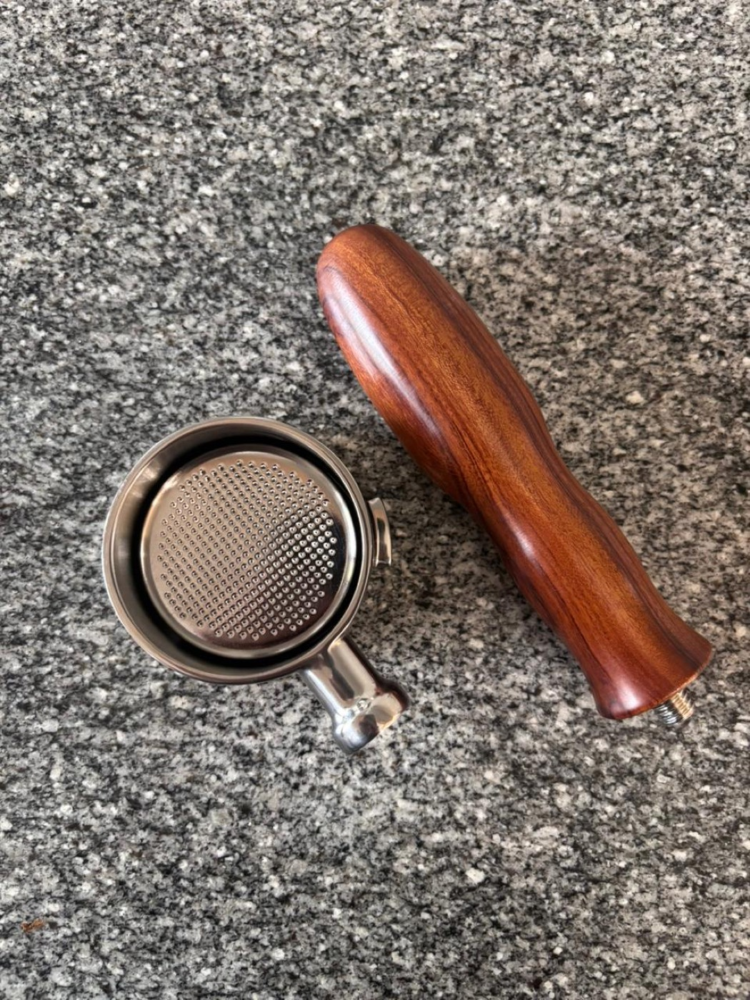
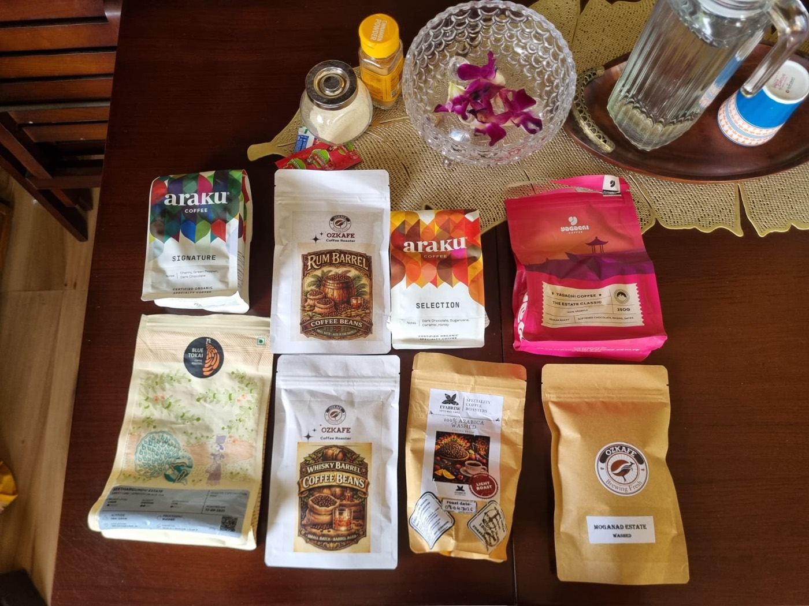
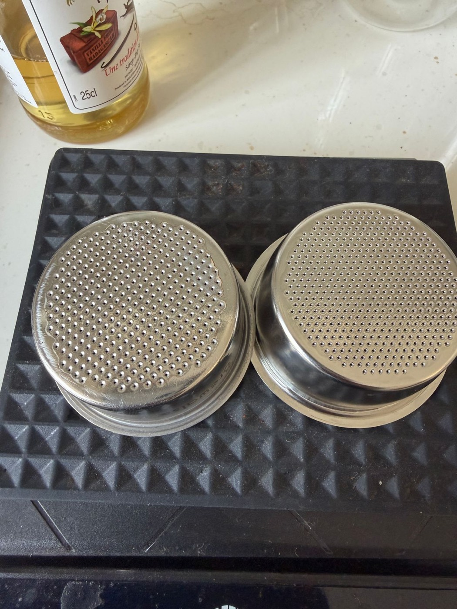
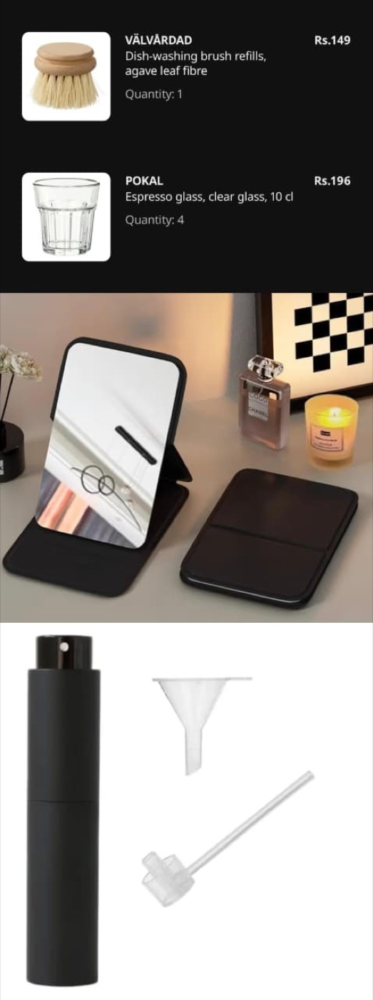
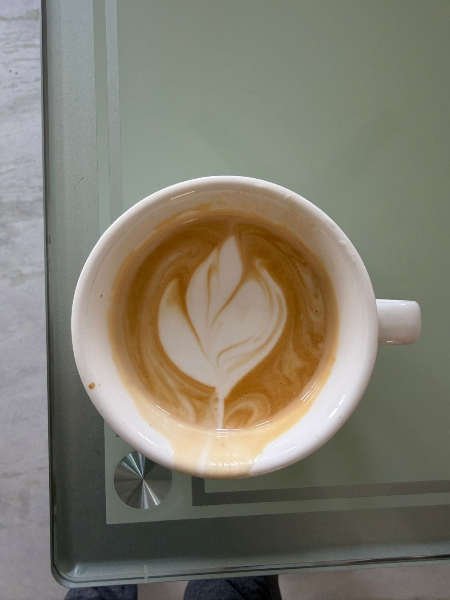

#1
🫘 Fresh beans
The single biggest lever. Stale supermarket beans = sad espresso no matter what. Buy freshly roasted, rest 7–10 days off roast date, use within a month.
See bean picks →☕ unofficial & mildly unhinged · made in India
You spent ₹12,000+ on a tiny espresso machine. You are about to spend far more on grinders, baskets and beans you'll swear you needed. This is the survival guide — built from a WhatsApp group of obsessed Indian home baristas who learned everything the hard (and hilarious) way.

Tick things off as you buy them. Your progress is saved on this device. No login, no nonsense, no newsletter. 🙅
Spend here. Everything else is jewellery. The golden rule of the group: spend as much on the grinder as the machine.
The single biggest lever. Stale supermarket beans = sad espresso no matter what. Buy freshly roasted, rest 7–10 days off roast date, use within a month.
See bean picks →More important than the machine itself. A good grinder turns the Dedica into a serious little espresso maker. A bad one will break your soul (and your wrist).
Find your grinder →"Step one: trash the stock portafilter. Step two: buy a bottomless one. Sorry — it's true 😓." It lets you see your mistakes and fix them.
Baskets & portafilters →💡 Keep the stock pressurised portafilter though — it's forgiving for pre-ground coffee, guests, and the Duo's cold-brew mode.
The Dedica needs a fine, consistent, espresso-capable grind. Filter grinders and "esp-capable" liars will give you sour, gushing shots. Filter by budget & type.
⚠️ Lighter roasts go sour on a Dedica — it can't hold high temp consistently. Start with medium / medium-dark. Filter by vibe:
📑 Want the master list? The community maintains a crowd-sourced spreadsheet of Indian coffee beans ↗ — roasters, prices and ₹/gram for dozens of beans. The fastest way to hunt down the cheapest fresh coffee.

Magic number for the Dedica: 51mm. If a listing doesn't say "DeLonghi / Dedica / EC685 / EC890", it won't fit. Don't @ us.

The basket matters more than the portafilter body. A precision basket (IMS-grade) gives more even extraction. But honestly: a decent grinder + fresh beans + a good-enough basket beats a fancy basket with bad grind.
🚫 Never put a pressurised basket in a bottomless portafilter — you get foam, not crema, spraying everywhere.
Honest ratings included. Some of this is essential. Some of it just "makes the bar look nice." 💅

Stop trusting the buttons (the "2x" button pulls a lungo). Get a scale, weigh everything, change one variable at a time.
| Dose in | Shot out | Time | Ratio | |
|---|---|---|---|---|
| Double | 18 g | 36 g | 25–32 s | 1:2 |
| Single | 9 g | ~22 g | 25–30 s | 1:2.5 |
| Light roast | 18 g | 45–54 g | longer | 1:2.5–1:3 |
Timer starts the moment you press the button (coffee-water contact), not at first drip.
Tap what's wrong. Get the community-approved fix. Repeat until espresso. ✨
👆 Pick a symptom to summon wisdom.
The Dedica's wand is… polite. Technique > power. Here's the group consensus.

The classics. Don't panic — nobody's Dedica has actually exploded. Yet.
Everything newcomers ask in their first week, answered by people on their fiftieth bag of beans.
Tap a code to copy. Codes expire and change — if one's dead, you didn't hear it from us. 🫥
Three channels will teach you 90% of what you need. The rest is reps.
India-specific. Prices wander — treat these as starting points, not gospel.
Most of the group bought their Dedica open-box from Latteholic and saved ~₹8k doing it (≈₹12k vs ~₹20k new on Amazon — sometimes as low as 10k+). The machines are almost always basically new. Here's the honest tally:
🤔 Budget closer to ₹25k? The group's hot take: consider the HiBrew H10A instead — temp control, pressure gauge, stronger steam, 3 baskets in the box. "Don't buy a Dedica if you can spend 25k." But the Dedica is the better-supported, more-moddable, more-fun gateway drug.
When "good espresso" stops being enough and you start eyeing a soldering iron.
Real cups & setups from the group. Latte art is a journey, not a destination.
Verbatim wisdom & chaos from the group chat (names withheld to protect the caffeinated).